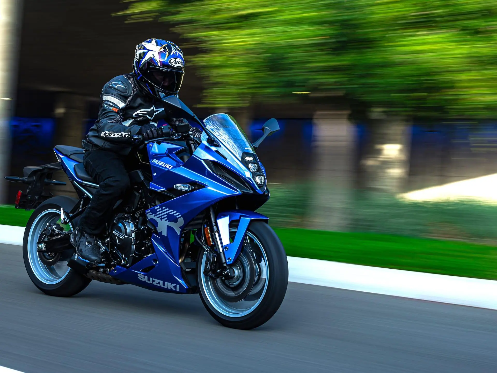

SUZUKI
SUZUKI
Is a sportbike that combines a full fairing styled by the artist’s pen and refined by the wind tunnel¹. It's propelled by Suzuki’s new-generation 776cc parallel-twin engine.
The GSX-8R uses Suzuki’s new parallel twin engine, which delivers torque in abundance across the rev range, provides an exciting character and feeling thanks to its 270-degree crankshaft design, and enables a slim chassis design thanks to its compact layout¹.
The GSX-8R is fitted with SHOWA’s SFF-BP fork and matching shock for agile and sure handling.
The GSX-8R has a full fairing styled by the artist’s pen and refined by the wind tunnel¹.
The GSX-8R comes with a slick enough quickshifter and autoblipper as standard¹. This standard-equipment system lets you shift up or down without operating the clutch lever while in motion. Features include clean upshifts with smooth acceleration and downshifts that are also quick and easy, thanks in part to automatic blipping and engine braking working together⁷.
Aiding rideability, usability, and flexibility is a suite of electronic systems that includes a bidirectional quickshifter as standard, three selectable engine power modes, and three selectable traction control settings, plus the ability to disengage the system entirely⁴. There’s also Suzuki’s low RPM assist and easy-start function⁴. With progressive features ranging from its parallel twin engine, robust frame, separately forged aluminium handlebars, uniquely shaped aluminium swingarm, inverted front forks, dual front disc brakes with four-piston radial-mount calipers, LED lighting and colour TFT LCD multifunction instrument panel, to advanced electronic control systems that include Suzuki Drive Mode Selector, Suzuki Traction Control System, the Bi-Directional Quick Shift system and the Ride-by-Wire Electronic Throttle System, the GSX- 8R is a sportbike destined to lead the way toward an exciting new era of riding pleasure⁵.
As of now, the GSX-8R is available at a starting price of £8,899¹.
The GSX-8R is built for comfort over sheer aggression². The engine is still impressively usable, with a meaty mid-range and the ability to be lazy with the gearbox². It's a motorcycle that's worthy of consideration for its speed and all its glory².